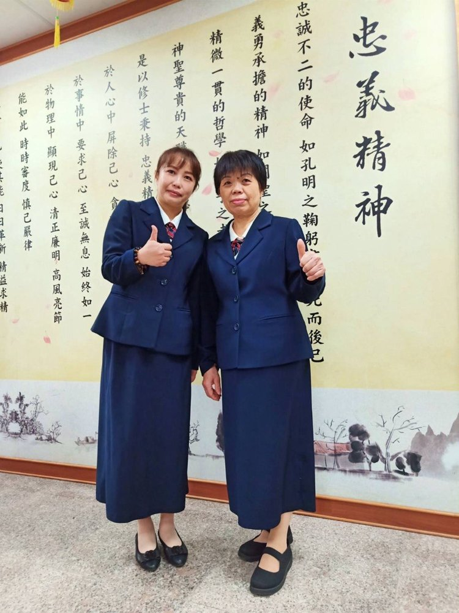
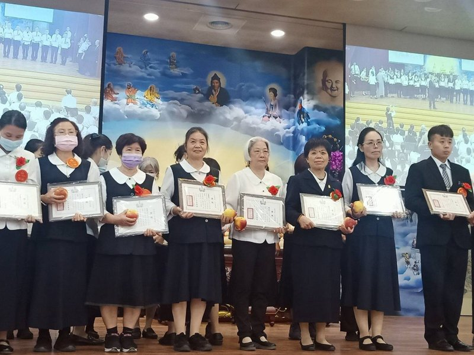
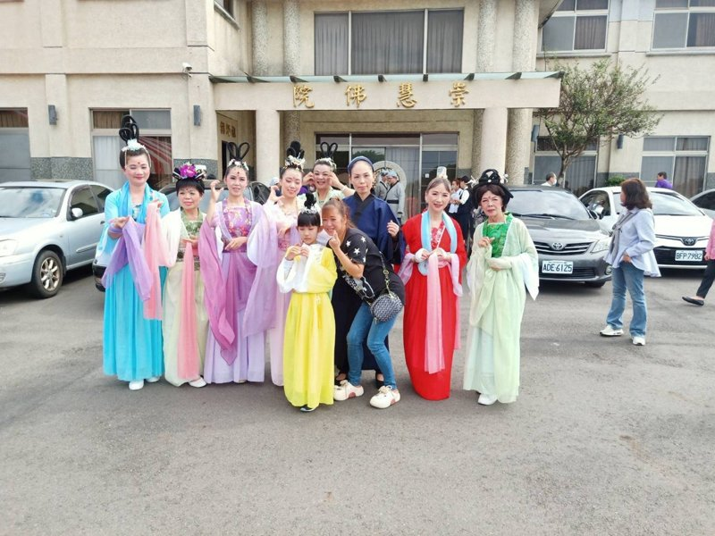
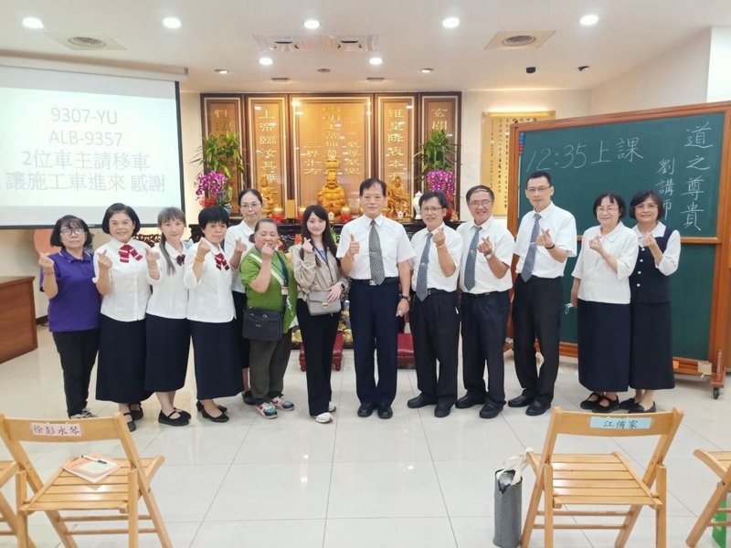

李奕蓉
正德佛堂






正德50週年 — 道親心得分享
發一崇德 李奕蓉
各位講師、各位前賢，大家好。後學是正德李奕蓉。
民國109年，承蒙弟弟李中道講師引進，得以在崇慧佛院求得大道。感恩引師邱金沙講師、保師李宗宣講師的慈悲成全。求道後隨即參與兩天的法會，接著上研究班，深刻體認道真、理真、天命真，由衷感恩天恩師德，以及老前人、前人、白水聖帝、不休息菩薩的庇蔭與大德敦厚。
這些年來，後學在道場中跟隨講師與前賢們一起學習，隨修隨辦，不敢懈怠。也盡己之力，將道的好處分享給身邊的親朋好友、左右鄰居——廣結善緣，學習菩薩的精神，以關心、耐心、信心待人，懂得尊重、傾聽與服務，才有機會度化更多有緣人，讓他們認識道的可貴。
求道可以改變命運，超生了死、脫離輪迴。求道是給家人一份平安福，給自己一道護身符。感恩天恩師德，讓後學有機會在道場與各位講師、前賢並肩學習，行功了愿。
最後，後學想分享一句話：「渡人先渡己。」當我們懂得管理自己的情緒，修正自己的缺點，提升自己的品德，我們的言行自然會成為照亮他人的力量。很多時候，一個溫暖的微笑、一句鼓勵的話、一個善意的行動，都可能成為別人生命的轉捩點。願我們都能從自身做起，以愛心待人、以智慧處事，在幫助別人的同時，也讓自己變得更好。
祝大家順心如意，心想事成。謝謝各位前賢。
（依李奕蓉道親錄音整理，115年6月）